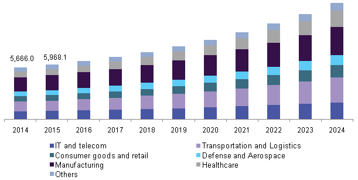
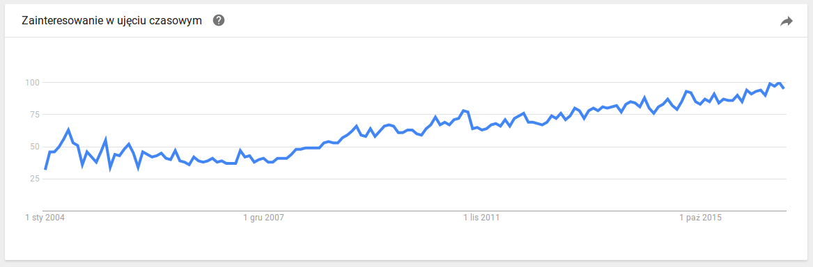

Keep track, stay sharp
Are (Polish) programmers lazy?
They don't want to do extra hours, stay late, etc.
They aren't!
They do care about what they do.
A tired programmer can create up to 43% more problems in the source code.
The problems that have to be fixed on the very next day.
Or that will stay as technical debt.
Are you able to show that to the business?
You could hook up multiple code analyzers to catch the current codebase issues
But is this enough to evaluate the state of your project?
What about:
- historical insights?
- types of problems?
- development trends?
- code stability?
- project size?
- and many more?
We will back you up with data!
More than 50 key project metrics.
All the top open-source quality tools.
Authors and organization context.
So that you don't have to take care of that.
Maintaining a basic set of quality tools for a single web-application will cost:
- 480 work minutes per month per project
- $240 per month per project
We reduce that:
- by 99% (down to 5 work minutes) per project
- by 80% (down to $50) per month per project
By providing a Quality as a Service complex solution
Quality software market in 2015
Market size: USD 5.96 billion
IT and Telecom: USD 535 million
 http://www.grandviewresearch.com/industry-analysis/quality-management-software-markethttp://www.idc.com/getdoc.jsp?containerId=US40915816
Software quality trends
 http://www.grandviewresearch.com/industry-analysis/quality-management-software-markethttp://www.idc.com/getdoc.jsp?containerId=US40915816
You need to care about quality, if:
- You own a software product
- You are a senior developer
- You are a project manager